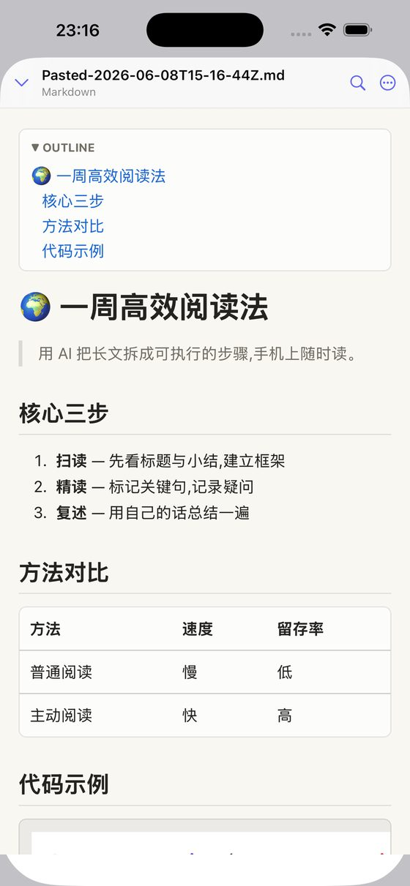
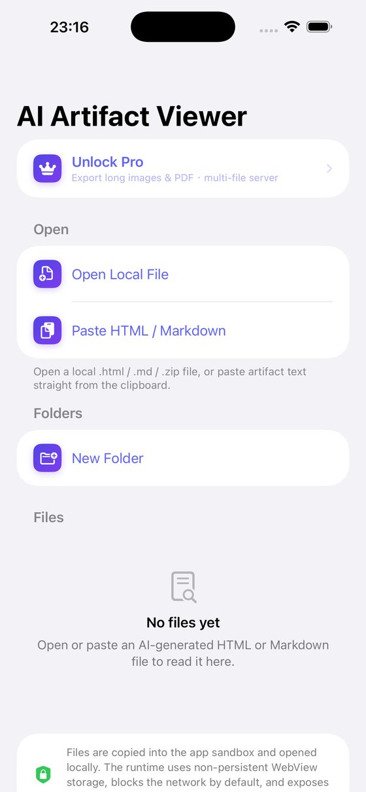
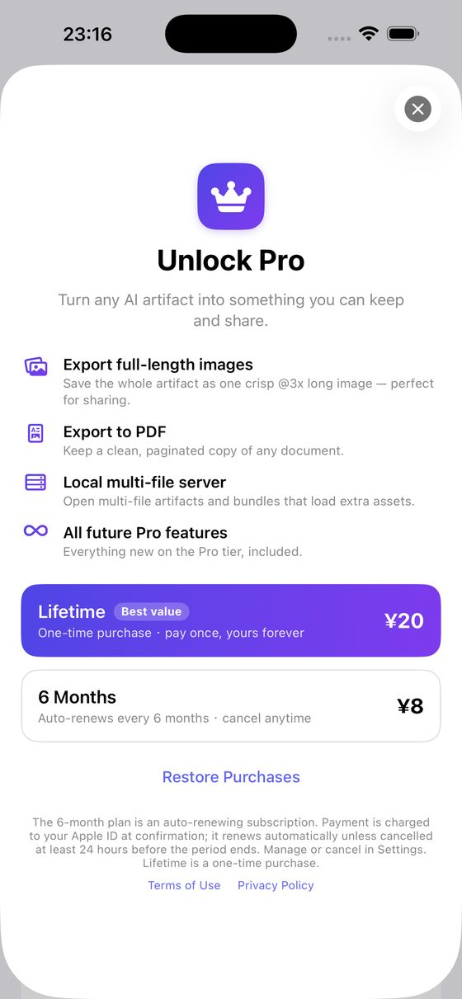

把 AI 给你的 HTML / Markdown,在 iPhone、iPad 上渲染成精美页面 —— 完全离线。
AI Artifact Reader 是一款 iOS App,用来打开、渲染、导出 ChatGPT、Claude、Gemini、豆包(Doubao)、Kimi、DeepSeek、通义千问等 AI 工具生成的 HTML 和 Markdown —— 知识卡片、报告、网页 demo、动态图表、代码,粘贴或打开文件立刻渲染,默认断网,数据不出设备。支持导出整页高清长图和 PDF,直接分享到微信、小红书。



ChatGPT / 豆包给我的 HTML 代码,手机上怎么看成网页?
复制代码 → 打开 AI Artifact Reader → 「粘贴 HTML / Markdown」,立刻渲染成真实页面,完全离线。
Claude 的 Artifact 怎么保存到手机上看?
把 Artifact 代码复制或下载成文件,在 AI Artifact Reader 里打开 —— 动态效果也能原样播放。
Markdown 笔记怎么变成长图分享?
打开文档 → 导出 → 高清长图(或 PDF),直接发微信群、小红书。导出是 Pro 功能。
收费吗?
阅读、粘贴、整理免费。Pro(导出长图/PDF、多文件)¥20 终身买断,或 ¥8 半年(含 7 天免费试用)。